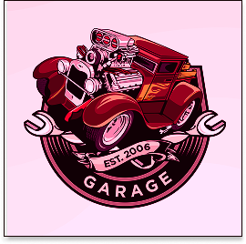
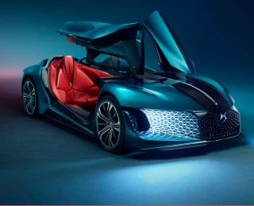
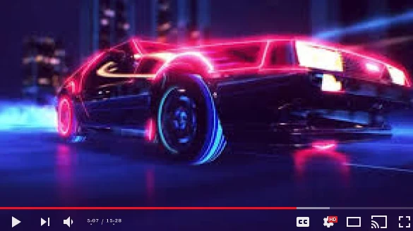
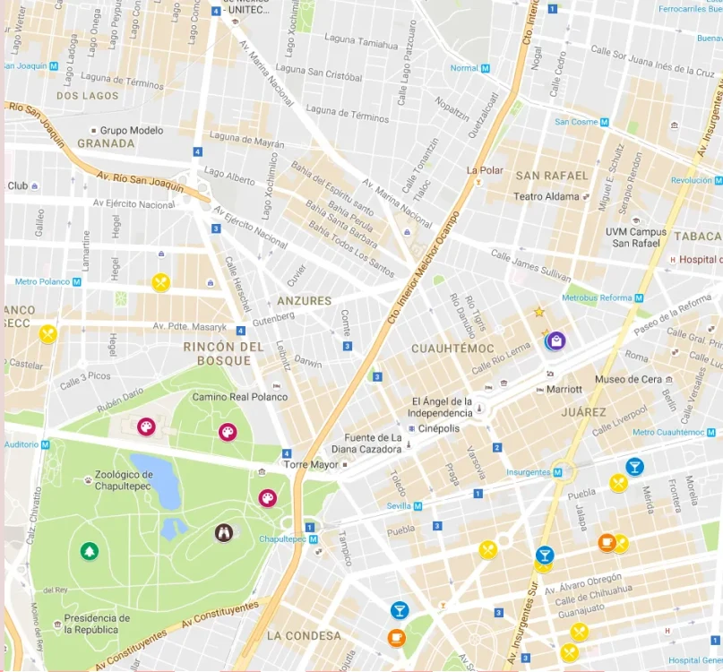

Un constat et ses enjeux
Le numérique repose sur des équipements, des réseaux et des centres de données. Tous mobilisent des ressources.

GARAGEBienvenue au Garage pas propre ! Une maquette volontairement décalée autour de la voiture et de nos habitudes de consommation.
Ce texte est un contenu de démonstration. Remplace-le par ton introduction, tes arguments et la présentation de ton projet.
Présente ici ton garage, son histoire et ses missions. Ce bloc est prévu pour un texte court.
En savoir plus
Les grosses voitures, c’est merveilleux.
Emplacement vidéo : source à ajouter.

Ajoute ici la description de ton offre ou de ton véhicule. Tu peux remplacer ce texte sans toucher à la mise en page.
La grosse voiture !69 Virage à gauche
12345 VILLE RANDOM
12 Rond-point Zucman
12345 VILLE RANDOM
45 porte Spéculation Boursière
12345 VILLE RANDOM
125 Rue de l’économie Hétérodoxe
12345 VILLE RANDOM
28 boulevard de la mort
12345 VILLE RANDOM

Un espace pour les notions de numérique responsable vues en cours. Remplace ces textes par tes contenus et ajoute les sources de tes éventuels chiffres.
Le numérique repose sur des équipements, des réseaux et des centres de données. Tous mobilisent des ressources.
La fabrication des appareils nécessite des matières premières. Prolonger leur usage est un levier important.
Définir les données utiles et leur durée de conservation permet d’éviter les accumulations inutiles.
Les gains d’efficacité peuvent être compensés par une augmentation des usages. Il faut regarder l’ensemble.
Entretenir les équipements et envisager leur réemploi avant de les remplacer.
Questionner les fonctionnalités et ne charger que les ressources nécessaires au besoin.
Prévoir une navigation au clavier, des libellés explicites et des contrastes lisibles.
Observer le poids des pages, les requêtes et les ressources consommées pour orienter les améliorations.